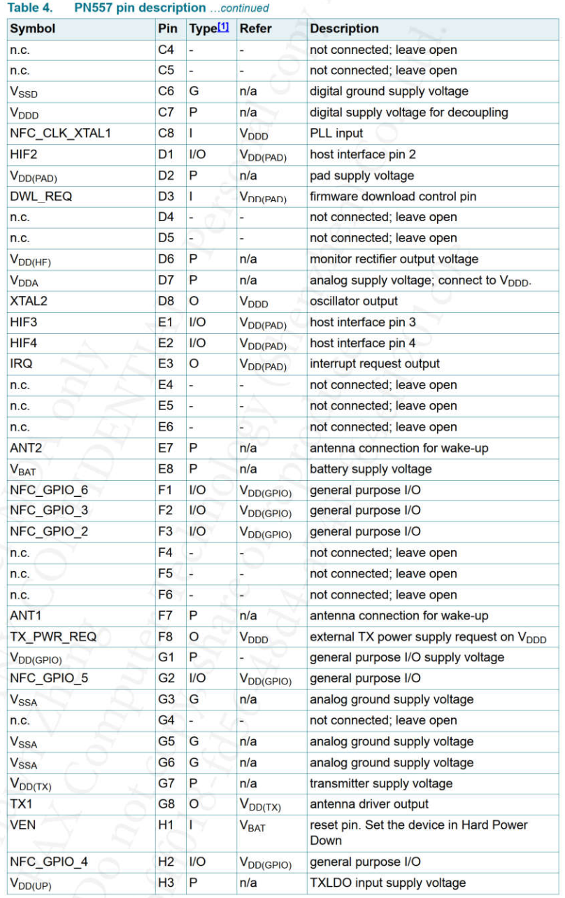

qcom qcm2290 nfc调试
记录一下nfc调试过程。
硬件信息
硬件引脚如下：
引脚 |
DIO |
引脚名称 |
电压 |
复用功能 |
说明 |
|---|---|---|---|---|---|
GPIO_14 |
DIO |
I2C5_SDA/support wakeup |
1.8V |
I2C_SDA |
I2C |
GPIO_15 |
DIO |
I2C5_SCL |
1.8V |
I2C_SCL |
I2C |
GPIO_96 |
GPIO96_PN557_PWR_REQ |
没有使用 |
|||
GPIO_105 |
DIO |
LPI_MI2S1_DATA1/support wakeup |
1.8V |
GPIO105_PN557_NINT |
PN557中断 |
GPIO_112 |
DIO |
LPI_MI2S0_CLK/LPI_DMIC1_CLK |
1.8V |
GPIO112_PN557_DWL_REQ |
PN557软件下载中断 |
GPIO_111 |
DIO |
LPI_UART5_CTS/LPI_I2C5_SDA/LPI_UART5_TX |
1.8V |
GPIO111_PN557_VEN |
PN557硬件复位 |
原理图如下：
pin定义


硬件dts配置如下：
/*qupv3_se0_i2c For new I2C*/
&qupv3_se5_i2c {
status = "okay";
/*NFC*/
pn557: pn557@28 {
status = "okay";
compatible = "nxp,pn557";
reg = <0x28>;
nxp,pn557-irq = <&tlmm 105 0>; //PN557中断
nxp,pn557-ven = <&tlmm 111 0>; //PN557硬件复位
nxp,pn557-fw-dwnld = <&tlmm 112 0>;
interrupt-parent = <&tlmm>;
interrupts = <105 0>;
interrupt-names = "nfc_irq";
pinctrl-names = "nfc_active", "nfc_suspend";
pinctrl-0 = <&pax_nfc_int_active &pax_nfc_enable_active &nfc_power_default>;/*&nfc_power_default*/
pinctrl-1 = <&pax_nfc_int_suspend &pax_nfc_enable_suspend>;
nxp,pn557-power = <&pm2250_gpios 3 GPIO_ACTIVE_HIGH>;
};
};
devcfg硬件配置
由于我们硬件引脚使用的是SE5作i2c，需要devcfg同步修改，否则会出现如下报错：
[ 99.945259] i2c_geni 4a94000.i2c: Invalid proto 1
[ 99.950059] i2c_geni 4a94000.i2c: error turning SE resources:-6
[ 99.963030] i2c_write: write failed ret(-6), maybe in standby
[ 99.984599] i2c_geni 4a94000.i2c: Invalid proto 1
[ 99.989398] i2c_geni 4a94000.i2c: error turning SE resources:-6
[ 99.995703] i2c_write: write failed ret(-6), maybe in standby
[ 100.017462] i2c_geni 4a94000.i2c: Invalid proto 1
[ 100.022400] i2c_geni 4a94000.i2c: error turning SE resources:-6
[ 100.030285] i2c_write: write failed ret(-6), maybe in standby
[ 100.276424] i2c_geni 4a94000.i2c: Invalid proto 1
[ 100.284794] i2c_geni 4a94000.i2c: error turning SE resources:-6
[ 100.302070] binder: 2571:3516 ioctl 40046210 801a2460 returned -22
[ 100.309678] i2c_read: returned -6
[ 100.323735] binder: 2574:3507 ioctl 40046210 8016f480 returned -22
[ 100.533476] binder: 3523:3523 ioctl 40046210 bee9f9d8 returned -22
[ 100.562349] i2c_geni 4a94000.i2c: Invalid proto 1
[ 100.574632] i2c_geni 4a94000.i2c: error turning SE resources:-6
[ 100.588543] i2c_write: write failed ret(-6), maybe in standby
[ 100.627149] i2c_geni 4a94000.i2c: Invalid proto 1
[ 100.632136] i2c_geni 4a94000.i2c: error turning SE resources:-6
kernel pinctrl报错死机
将驱动移植进去，发现driver找不到pinctrl，直接报错死机：
[ 4.345317] i2c_geni 4a94000.i2c: Bus frequency is set to 400000Hz
[ 4.352230] i2c_geni 4a94000.i2c: Invalid proto 1
[ 4.357434] nfc_parse_dt(): Pinctrl not defined
[ 4.357453] Unable to handle kernel paging request at virtual address fffffff9
[ 4.362645] Couldn't parse device tree rc=-517
[ 4.369332] pgd = c0004000
[ 4.373964] sgm41528_probe enter
[ 4.376471] [fffffff9] *pgd=784ff841, *pte=00000000, *ppte=00000000
[ 4.379742] sgm41528-master-charger 0-006b: sgm41528_parse_dt: -2 gpio get failed
[ 4.386012] Internal error: Oops: 27 [#1] PREEMPT SMP ARM
[ 4.393499] sgm41528-master-charger 0-006b: Failed to read device tree properties-22
[ 4.398902] Modules linked in:
[ 4.398916] CPU: 3 PID: 212 Comm: kworker/u8:8 Tainted: G W 4.19.157 #36
[ 4.398922] Hardware name: Qualcomm Technologies, Inc. SCUBA (Flattened Device Tree)
[ 4.398950] Workqueue: events_unbound async_run_entry_fn
[ 4.406751] sgm41528-master-charger: probe of 0-006b failed with error -22
[ 4.409784] PC is at find_state+0xc/0x4c
[ 4.418285] FG_CW2017 : cw2017_init-755 :
[ 4.425529] LR is at pinctrl_lookup_state+0x10/0x78
[ 4.425532] pc : [<c05735a8>] lr : [<c0573534>] psr: 60000013
[ 4.425536] sp : f2b3bde0 ip : 01aa03db fp : f259891c
[ 4.425539] r10: f2db2400 r9 : c1a585b5 r8 : fffff000
[ 4.425543] r7 : c257ad94 r6 : ffffffed r5 : ffffffed r4 : 00000000
[ 4.425546] r3 : 00000001 r2 : 168d154e r1 : c1a57c2c r0 : ffffffed
[ 4.425555] Flags: nZCv IRQs on FIQs on Mode SVC_32 ISA ARM Segment none
[ 4.425558] Control: 10c0383d Table: 4000406a DAC: 00000051
[ 4.425562] Process kworker/u8:8 (pid: 212, stack limit = 0xf2b3a210)
[ 4.425567] Stack: (0xf2b3bde0 to 0xf2b3c000)
[ 4.425577] bde0: c1a57c2c ffffffed 00000000 c257ad94 fffff000 c0573534 f259891c f748e818
[ 4.425583] be00: c257ad94 c079fccc c1c00960 006080c0 f2598800 c1c00960 006080c0 fffffff4
[ 4.425588] be20: f2db2420 c07a1514 00000000 00000000 00000000 f2db2400 f2db2420 c07a14a4
[ 4.425594] be40: f2b3bec4 c1fa36d8 c2579004 00000000 f5c29c05 c095a6d8 f2db2420 c1fa36d8
[ 4.425599] be60: 0000000e f2b3bec4 00000000 c07567d4 f5c29c05 c12b2f88 f2db2420 ffffffed
[ 4.425604] be80: c1fa36d8 f2b3bec4 c1f0e648 c1f03900 00000000 c0756544 f2db2420 c1fa36d8
[ 4.425610] bea0: 00000000 c07572a0 f2b3beec f2b3bec4 c1f0e648 c1f03900 00000000 c0754a70
[ 4.425615] bec0: f5c29c05 f51290dc f2aed7e8 168d154e f2db2420 f2db2478 c1f0e648 f2cf2880
[ 4.425621] bee0: f5c29c00 c0757468 c12b2f7c f2db2420 00010101 168d154e f2cf28b0 c20cd008
[ 4.432229] FG_CW2017 : cw2017_probe-604 :
[ 4.437821] bf00: c1f0e640 c0152200 c1f03900 00000000 f2b3bf28 c0161710 f4c45600 c1f0e670
[ 4.437827] bf20: f5c10000 f2cf2890 f5c29c00 c1f03900 00000000 c014a6e8 f5c10000 f4c45600
[ 4.437832] bf40: f5c10000 f4c45614 0000000c f5c10024 c1f03900 f5c10000 0000000c c014acd4
[ 4.437838] bf60: f4c45a00 c014aa34 f4c45a28 f4c465c0 f2f75eac f4c45600 c20cdfb1 f4c45a00
[ 4.437843] bf80: 00000000 c014f5bc c014aa34 f4c465c0 c014f418 00000000 00000000 00000000
[ 4.437848] bfa0: 00000000 00000000 00000000 c01010b4 00000000 00000000 00000000 00000000
[ 4.437854] bfc0: 00000000 00000000 00000000 00000000 00000000 00000000 00000000 00000000
[ 4.437858] bfe0: 00000000 00000000 00000000 00000000 00000013 00000000 00000000 00000000
[ 4.437882] [<c05735a8>] (find_state) from [<c0573534>] (pinctrl_lookup_state+0x10/0x78)
[ 4.442645] r reg[10] = 5A
[ 4.445901] [<c0573534>] (pinctrl_lookup_state) from [<c079fccc>] (nfc_parse_dt+0x98/0x260)
[ 4.445912] [<c079fccc>] (nfc_parse_dt) from [<c07a1514>] (nfc_i2c_dev_probe+0x70/0x3ec)
[ 4.451059] r reg[11] = 00
[ 4.457070] [<c07a1514>] (nfc_i2c_dev_probe) from [<c095a6d8>] (i2c_device_probe+0x1d8/0x2c8)
[ 4.457085] [<c095a6d8>] (i2c_device_probe) from [<c07567d4>] (really_probe+0x158/0x3e8)
[ 4.457092] [<c07567d4>] (really_probe) from [<c0756544>] (driver_probe_device+0x78/0x1b0)
[ 4.457099] [<c0756544>] (driver_probe_device) from [<c0754a70>] (bus_for_each_drv+0x84/0xc4)
[ 4.462593] r reg[12] = 00
[ 4.467556] [<c0754a70>] (bus_for_each_drv) from [<c0757468>] (__device_attach_async_helper+0xa8/0xfc)
[ 4.467564] [<c0757468>] (__device_attach_async_helper) from [<c0152200>] (async_run_entry_fn+0x70/0x1d0)
[ 4.467578] [<c0152200>] (async_run_entry_fn) from [<c014a6e8>] (process_one_work+0x20c/0x4f0)
[ 4.474400] r reg[13] = 00
[ 4.480628] [<c014a6e8>] (process_one_work) from [<c014acd4>] (worker_thread+0x2a0/0x4d8)
[ 4.488048] r reg[14] = 00
[ 4.493521] [<c014acd4>] (worker_thread) from [<c014f5bc>] (kthread+0x1a4/0x1ac)
[ 4.500265] r reg[15] = 00
[ 4.504334] [<c014f5bc>] (kthread) from [<c01010b4>] (ret_from_fork+0x14/0x20)
[ 4.504337] Exception stack(0xf2b3bfb0 to 0xf2b3bff8)
[ 4.504342] bfa0: 00000000 00000000 00000000 00000000
[ 4.504347] bfc0: 00000000 00000000 00000000 00000000 00000000 00000000 00000000 00000000
[ 4.512790] r reg[16] = 00
[ 4.520697] bfe0: 00000000 00000000 00000000 00000000 00000013 00000000
[ 4.520707] Code: eafffff2 e92d41f0 e1a06000 e3a04000 (e5b6700c)
[ 4.520742] ---[ end trace 365bbf4c6820e9f4 ]---
[ 4.529205] r reg[17] = 00
[ 4.537148] Kernel panic - not syncing: Fatal exception
根据logPinctrl not defined定位到代码：
UM.9.15/kernel/msm-4.19/drivers/misc/pax/nfc/pn557/common.c:
* nfc_i2c_dev_probe //i2c_drv.c
└── nfc_parse_dt(&client->dev,nfc_configs, PLATFORM_IF_I2C);
├── pinctrl = devm_pinctrl_get(dev);
├── set_state = pinctrl_lookup_state(pinctrl,"nfc_active");
└── pinctrl_select_state(pinctrl,set_state);
明明在dts中都已经定义了pinctrl-names，看看为什么找不到pinctrl原因，首先了解一下，kernel drvier匹配详细规则请参考：
0028_platform_driver_probe匹配及调用流程.md
以下可以看到下面这个device和driver的compatible是不匹配的，但是它的id_table和device名字都是pn553，所以也会匹配上，那匹配上了却没有pinctrl定义当然会找不到。
device:
&qupv3_se5_i2c {
status = "okay";
pn553@28 {
compatible = "nxp,pn553";
reg = <0x28>;
nxp,pn557-irq = <&tlmm 105 0>;
nxp,pn557-ven = <&tlmm 111 0>;
nxp,pn557-fw-dwnld = <&tlmm 112 0>;
};
};
driver:
/* kept same as dts */
static const struct i2c_device_id nfc_i2c_dev_id[] = { { "pn553", 0 },
{} };
static const struct of_device_id nfc_i2c_dev_match_table[] = {
{
.compatible = "nxp,pn557",
},
{}
};
static const struct dev_pm_ops nfc_i2c_dev_pm_ops = { SET_SYSTEM_SLEEP_PM_OPS(
nfc_i2c_dev_suspend, nfc_i2c_dev_resume) };
static struct i2c_driver nfc_i2c_dev_driver = {
.id_table = nfc_i2c_dev_id,
.probe = nfc_i2c_dev_probe,
.remove = nfc_i2c_dev_remove,
.driver = {
.name = "nxp,pn557",
.pm = &nfc_i2c_dev_pm_ops,
.of_match_table = nfc_i2c_dev_match_table,
.probe_type = PROBE_PREFER_ASYNCHRONOUS,
},
};
关键它找不到pintctrl还去执行了操作，那肯定空指针异常了，所以最后修改如下：
--- a/UM.9.15/vendor/qcom/proprietary/devicetree-4.19/qcom/m9200/scuba.dtsi
+++ b/UM.9.15/vendor/qcom/proprietary/devicetree-4.19/qcom/m9200/scuba.dtsi
@@ -2280,17 +2280,6 @@
#include "pm8008.dtsi"
};
-&qupv3_se5_i2c { //干掉这个dts，造成误判断。
- status = "okay";
- pn553@28 {
- compatible = "nxp,pn553";
- reg = <0x28>;
- nxp,pn557-irq = <&tlmm 105 0>;
- nxp,pn557-ven = <&tlmm 111 0>;
- nxp,pn557-fw-dwnld = <&tlmm 112 0>;
- };
-};
-
--- a/UM.9.15/kernel/msm-4.19/drivers/misc/pax/nfc/pn557/common.c
+++ b/UM.9.15/kernel/msm-4.19/drivers/misc/pax/nfc/pn557/common.c
@@ -46,20 +46,20 @@ int nfc_parse_dt(struct device *dev, struct platform_configs *nfc_configs,
if (IS_ERR_OR_NULL(pinctrl)) {
pr_err("%s(): Pinctrl not defined", __func__);
}
- set_state = pinctrl_lookup_state(pinctrl,"nfc_active");
- if (IS_ERR_OR_NULL(set_state)) {
- pr_err("nfc pinctrl lookup failed for default state");
- return -EINVAL;
- }
- ret = pinctrl_select_state(pinctrl,set_state); //这里找不到还执行会死机的
- if (ret){
- pr_err("%s:nfc Error selecting active state");
- }
- else{
- pr_info("OK selecting active state");
+ else {
+ set_state = pinctrl_lookup_state(pinctrl,"nfc_active");
+ if (IS_ERR_OR_NULL(set_state)) {
+ pr_err("nfc pinctrl lookup failed for default state");
+ return -EINVAL;
+ }
+ ret = pinctrl_select_state(pinctrl,set_state);
+ if (ret){
+ pr_err("%s:nfc Error selecting active state");
+ }
+ else{
+ pr_info("OK selecting active state");
+ }
}
-
成功打印如下：
[ 3.673803] nfc_i2c_dev_init: Loading NXP NFC I2C driver
[ 4.542859] i2c_geni 4a94000.i2c: Bus frequency is set to 400000Hz
[ 4.551593] OK selecting active state //成功获取pinctrl
[ 4.551693] nfc_parse_dt: irq 1002
[ 4.556004] Couldn't parse device tree rc=-517
[ 4.558946] gpio_request nfc_power_gpio ret:0
[ 4.567901] gpio_direction_output nfc_power_gpio ret:0
[ 4.577154] nfc_parse_dt: 1002, 1008, 995
[ 4.577664] nfc_i2c_dev_probe: requesting IRQ 199
[ 4.616177] nfc_i2c_dev_probe: probing nfc i2c successfully
32go版本nfc配置
--- a/UM.9.15/device/qcom/bengal_32go/BoardConfig.mk
+++ b/UM.9.15/device/qcom/bengal_32go/BoardConfig.mk
@@ -200,3 +200,5 @@ BUILD_BROKEN_USES_BUILD_HOST_EXECUTABLE := true
BUILD_BROKEN_USES_BUILD_COPY_HEADERS := true
include device/qcom/sepolicy_vndr/SEPolicy.mk
+#For PN557
+#include vendor/nxp/SNxxx/BoardConfigNfc.mk
diff --git a/UM.9.15/device/qcom/bengal_32go/bengal_32go.mk b/UM.9.15/device/qcom/bengal_32go/bengal_32go.mk
old mode 100644
new mode 100755
index 454dadf8c3a..a0454b801da
--- a/UM.9.15/device/qcom/bengal_32go/bengal_32go.mk
+++ b/UM.9.15/device/qcom/bengal_32go/bengal_32go.mk
@@ -278,3 +278,5 @@ include device/qcom/wlan/bengal_32go/wlan.mk
$(call inherit-product-if-exists, vendor/qcom/defs/product-defs/system/*.mk)
$(call inherit-product-if-exists, vendor/qcom/defs/product-defs/vendor/*.mk)
###################################################################################
+#include NFC PN557
+$(call inherit-product-if-exists, vendor/nxp/SNxxx/device-nfc.mk)
启动BoardConfigNfc.mk中加的manifest都注释了，相当于没作用：
BoardConfigNfc.mk:
LOCAL_STEM := nfc/BoardConfigNfcPartial.mk
#BOARD_KERNEL_CMDLINE += androidboot.selinux=permissive
DEVICE_MANIFEST_FILE += vendor/nxp/SNxxx/manifest.xml
重点看一下vendor/nxp/SNxxx/device-nfc.mk下，里面有很多配置文件：
NXP_NFC_HW := PN557
NXP_NFC_PLATFORM := SNxxx
NXP_VENDOR_DIR := nxp
# These are the hardware-specific features
PRODUCT_COPY_FILES += \
frameworks/native/data/etc/android.hardware.nfc.hce.xml:system/etc/permissions/android.hardware.nfc.hce.xml \
frameworks/native/data/etc/android.hardware.nfc.hcef.xml:system/etc/permissions/android.hardware.nfc.hcef.xml \
frameworks/native/data/etc/android.hardware.nfc.ese.xml:system/etc/permissions/android.hardware.nfc.ese.xml \
frameworks/native/data/etc/android.hardware.nfc.uicc.xml:system/etc/permissions/android.hardware.nfc.uicc.xml \
frameworks/native/data/etc/com.nxp.mifare.xml:system/etc/permissions/com.nxp.mifare.xml \
frameworks/native/data/etc/android.hardware.nfc.xml:system/etc/permissions/android.hardware.nfc.xml \
ifeq ($(NXP_NFC_HW),PN557)
PRODUCT_COPY_FILES += \
vendor/$(NXP_VENDOR_DIR)/SNxxx/hw/$(NXP_NFC_HW)/libnfc-nci_NCI2_0.conf:$(TARGET_COPY_OUT_PRODUCT)/etc/libnfc-nci.conf \
vendor/$(NXP_VENDOR_DIR)/SNxxx/hw/$(NXP_NFC_HW)/libnfc-nxp-PN557_example.conf:vendor/etc/libnfc-nxp.conf \
vendor/$(NXP_VENDOR_DIR)/SNxxx/hw/$(NXP_NFC_HW)/libnfc-nxp_RF-PN557_example.conf:vendor/libnfc-nxp_RF.conf
endif
# NFC Init Files
PRODUCT_COPY_FILES += \
vendor/$(NXP_VENDOR_DIR)/SNxxx/hw/init.$(NXP_NFC_PLATFORM).nfc.rc:vendor/etc/init/init.$(NXP_NFC_HOST).nfc.rc \
vendor/$(NXP_VENDOR_DIR)/SNxxx/hw/init.$(NXP_NFC_PLATFORM).se.rc:vendor/etc/init/init.$(NXP_NFC_HOST).se.rc \
# NFC packages
PRODUCT_PACKAGES += \
libnfc-nci \
NfcNci \
Tag \
android.hardware.nfc@1.0-impl \
com.nxp.nfc \
SBUpdateApp \
PRODUCT_PACKAGES += \
android.hardware.nfc@1.2-service \
android.hardware.secure_element@1.2-service \
android.hardware.wired_se@1.0-service \
android.hardware.trusted_se@1.2-service \
PRODUCT_PROPERTY_OVERRIDES += \
ro.hardware.nfc_nci=$(NXP_NFC_PLATFORM)
BOARD_SEPOLICY_DIRS += vendor/$(NXP_VENDOR_DIR)/SNxxx/sepolicy \
vendor/$(NXP_VENDOR_DIR)/SNxxx/sepolicy/nfc \
vendor/$(NXP_VENDOR_DIR)/SNxxx/sepolicy/se \
vendor/$(NXP_VENDOR_DIR)/SNxxx/sepolicy/wiredse \
vendor/$(NXP_VENDOR_DIR)/SNxxx/sepolicy/trustedse \
可以看到跟nfc相关的好几个hal层接口,发现android.hardware.trusted_se@1.2-service和android.hardware.wired_se@1.0-service没有声明。
system/etc/vintf/compatibility_matrix.5.xml
428: <name>android.hardware.secure_element</name>
HIDL接口匹配
由于之前android标准版本都已经调通了nfc功能，需要在manifest.xml中添加我们新增的nfc接口服务，那我们直接看看标准版本目录下新增了哪些，一般可以直接在
vendor/etc/vintf/目录找，启动vendor/etc/vintf/manifest路径是很多系统定义单独的接口：
libing@ubuntu2145:~/libing/A6650-project/UM.9.15/out/target/product/bengal$ vim vendor/etc/vintf/manifest/
android.hardware.atrace@1.0-service.xml android.hardware.lights-qti.xml manifest.xml
android.hardware.biometrics.fingerprint@2.1-service.xml android.hardware.neuralnetworks@1.3-service-qti.xml power.xml
android.hardware.boot@1.1.xml android.hardware.quectelat.xml vendor.qti.gnss@4.0-service.xml
android.hardware.cas@1.2-service.xml android.hardware.sensors@2.0-multihal.xml vendor.qti.hardware.display.allocator-service.xml
android.hardware.gnss@2.1-service-qti.xml android.hardware.usb@1.2-service.xml vendor.qti.hardware.display.composer-service.xml
android.hardware.graphics.mapper-impl-qti-display.xml android.hardware.wifi@1.0-service.xml vendor.qti.hardware.servicetracker@1.2-service.xml
android.hardware.health@2.1.xml android.hardware.wifi.hostapd.xml vendor.qti.hardware.vibrator.service.xml
android.hardware.keymaster@4.1-service-default-qti.xml manifest_android.hardware.drm@1.3-service.clearkey.xml vendor.qti.hardware.wifi.wifimyftm@1.0-service.xml
这里面没有nfc的，直接在vendor/etc/vintf/manifest.xml文件中找到如下：
<hal format="hidl">
<name>vendor.nxp.hardware.nfc</name>
<transport>hwbinder</transport>
<version>2.0</version>
<interface>
<name>INqNfc</name>
<instance>default</instance>
</interface>
<fqname>@2.0::INqNfc/default</fqname>
</hal>
<hal format="hidl">
<name>android.hardware.nfc</name>
<transport>hwbinder</transport>
<version>1.2</version>
<interface>
<name>INfc</name>
<instance>default</instance>
</interface>
<fqname>@1.2::INfc/default</fqname>
</hal>
高通的manifest一般在target代码下添加，因为它属于vendor定制的东西，一般都放在vendor文件系统：
--- a/UM.9.15/device/qcom/bengal_32go/manifest.xml
+++ b/UM.9.15/device/qcom/bengal_32go/manifest.xml
@@ -136,6 +136,25 @@ IF ADVISED OF THE POSSIBILITY OF SUCH DAMAGE.
<instance>default</instance>
</interface>
</hal>
+ <!-- NFC HIDL service -->
+ <hal format="hidl">
+ <name>android.hardware.nfc</name>
+ <transport>hwbinder</transport>
+ <version>1.2</version>
+ <interface>
+ <name>INfc</name>
+ <instance>default</instance>
+ </interface>
+ </hal>
+ <hal format="hidl">
+ <name>vendor.nxp.hardware.nfc</name>
+ <transport>hwbinder</transport>
+ <version>2.0</version>
+ <interface>
+ <name>INqNfc</name>
+ <instance>default</instance>
+ </interface>
+ </hal>
以上看到加入了两个hal层服务接口，但是从系统编译来看，只加了
android.hardware.nfc@1.2-service这个HAL服务，另外那个没用到。android.hardware.nfc是在
UM.9.15/hardware/nxp/nfc/1.2路径下，主要文件如下：
.
├── android.hardware.nfc@1.2-service.rc
├── Nfc.cpp
├── Nfc.h
└── NxpNfcService.cpp
主要hal接口：
wugn@jcrj-tf-compile:nxp$ find . -name *.hal
./secure_element/extns/intf/nxpese/1.0/types.hal
./secure_element/extns/intf/nxpese/1.0/INxpEse.hal
./nfc/SN100x/extns/intf/nxpnfc/2.0/types.hal
./nfc/SN100x/extns/intf/nxpnfc/2.0/INxpNfc.hal
以下是没加hal层的报错打印，应用
com.android.nfc调用register_com_android_nfc_NativeNfcManager向虚拟机注册JNI方法失败，原因是android.hardware.nfcHAL层没起来：
11-07 03:04:58.506 28589 28589 F libc : Fatal signal 11 (SIGSEGV), code 1 (SEGV_MAPERR), fault addr 0x0 in tid 28589 (com.android.nfc), pid 28589 (com.android.nfc)
11-07 03:04:59.525 28609 28609 F DEBUG : Cmdline: com.android.nfc
11-07 03:04:59.525 28609 28609 F DEBUG : pid: 28589, tid: 28589, name: com.android.nfc >>> com.android.nfc <<<
11-07 03:04:59.526 28609 28609 F DEBUG : #00 pc 000c9494 /system/lib/libnfc-nci.so (NfcAdaptation::InitializeHalDeviceContext()+1068) (BuildId: 339b5b005d1eec470010fda2e11fe68f)
11-07 03:04:59.526 28609 28609 F DEBUG : #01 pc 000c9024 /system/lib/libnfc-nci.so (NfcAdaptation::GetInstance()+260) (BuildId: 339b5b005d1eec470010fda2e11fe68f)
11-07 03:04:59.526 28609 28609 F DEBUG : #02 pc 000d1b98 /system/lib/libnfc-nci.so (NfcConfig::loadConfig()+736) (BuildId: 339b5b005d1eec470010fda2e11fe68f)
11-07 03:04:59.526 28609 28609 F DEBUG : #03 pc 000d1fb8 /system/lib/libnfc-nci.so (NfcConfig::NfcConfig()+44) (BuildId: 339b5b005d1eec470010fda2e11fe68f)
11-07 03:04:59.526 28609 28609 F DEBUG : #04 pc 000d202c /system/lib/libnfc-nci.so (NfcConfig::getInstance()+100) (BuildId: 339b5b005d1eec470010fda2e11fe68f)
11-07 03:04:59.526 28609 28609 F DEBUG : #05 pc 000d20b4 /system/lib/libnfc-nci.so (NfcConfig::hasKey(std::__1::basic_string<char, std::__1::char_traits<char>, std::__1::allocator<char> > const&)+8) (BuildId: 339b5b005d1eec470010fda2e11fe68f)
11-07 03:04:59.526 28609 28609 F DEBUG : #06 pc 0006134f /system/lib/libnfc_nci_jni.so (PowerSwitch::initialize(PowerSwitch::PowerLevel)+174) (BuildId: a9cf9a0ef4ad4db1c49abc0a8c47ed77)
11-07 03:04:59.526 28609 28609 F DEBUG : #07 pc 0003dced /system/lib/libnfc_nci_jni.so (android::register_com_android_nfc_NativeNfcManager(_JNIEnv*)+132) (BuildId: a9cf9a0ef4ad4db1c49abc0a8c47ed77)
11-07 03:04:59.526 28609 28609 F DEBUG : #08 pc 00051ec5 /system/lib/libnfc_nci_jni.so (JNI_OnLoad+260) (BuildId: a9cf9a0ef4ad4db1c49abc0a8c47ed77)
11-07 03:04:59.527 28609 28609 F DEBUG : #16 pc 00197260 /system/app/NfcNci/NfcNci.apk (com.android.nfc.dhimpl.NativeNfcManager.<clinit>+4)
11-07 03:04:59.527 28609 28609 F DEBUG : #25 pc 0017ffd2 /system/app/NfcNci/NfcNci.apk (com.android.nfc.NfcService.<init>+546)
11-07 03:04:59.527 28609 28609 F DEBUG : #27 pc 00176746 /system/app/NfcNci/NfcNci.apk (com.android.nfc.NfcApplication.onCreate+154)
11-07 03:04:59.684 1271 1570 I ActivityManager: Process com.android.nfc (pid 28589) has died: pers PER
11-07 03:04:59.688 1271 1570 W ActivityManager: Re-adding persistent process ProcessRecord{858e537 28589:com.android.nfc/1027}
11-07 03:04:59.710 1271 1637 I ActivityManager: Start proc 28614:com.android.nfc/1027 for restart com.android.nfc
11-07 03:04:59.824 28614 28614 V GraphicsEnvironment: ANGLE Developer option for 'com.android.nfc' set to: 'default'
11-07 03:04:59.825 28614 28614 V GraphicsEnvironment: ANGLE GameManagerService for com.android.nfc: false
11-07 03:04:59.869 28614 28614 I com.android.nf: ConfigFile - Parsing file '/product/etc/libnfc-nci.conf'
11-07 03:04:59.869 28614 28614 I com.android.nf: ConfigFile - [NFA_STORAGE] = "/data/nfc"
11-07 03:04:59.871 376 376 I hwservicemanager: getTransport: Cannot find entry android.hardware.nfc@1.2::INfc/default in either framework or device VINTF manifest.
11-07 03:04:59.872 376 376 I hwservicemanager: getTransport: Cannot find entry android.hardware.nfc@1.1::INfc/default in either framework or device VINTF manifest.
11-07 03:04:59.873 376 376 I hwservicemanager: getTransport: Cannot find entry android.hardware.nfc@1.0::INfc/default in either framework or device VINTF manifest.
11-07 03:04:59.873 28614 28614 F libc : Fatal signal 11 (SIGSEGV), code 1 (SEGV_MAPERR), fault addr 0x0 in tid 28614 (com.android.nfc), pid 28614 (com.android.nfc)
11-07 03:05:00.774 28635 28635 D nxpnfc@2.0-service: NFC HAL Service 1.2 is starting.
11-07 03:05:00.775 28635 28635 D android.hardware.nfc@1.2-service: readConfig; filename is /vendor/etc/libnfc-nxp.conf
11-07 03:05:00.775 28635 28635 D android.hardware.nfc@1.2-service: readNxpRFConfig-Enter..Reading /system/vendor/libnfc-nxp_RF.conf
11-07 03:05:00.775 28635 28635 D android.hardware.nfc@1.2-service: readConfig; filename is /system/vendor/libnfc-nxp_RF.conf
11-07 03:05:00.775 28635 28635 D android.hardware.nfc@1.2-service: readNxpTransitConfig-Enter..Reading /data/vendor/nfc/libnfc-nxpTransit.conf
11-07 03:05:00.776 28635 28635 E android.hardware.nfc@1.2-service: readConfig Cannot open config file /data/vendor/nfc/libnfc-nxpTransit.conf
11-07 03:05:00.776 28635 28635 E android.hardware.nfc@1.2-service: Error : opening (/system/vendor/lib64/hal_libnfc.so) !!
11-07 03:05:00.777 376 376 I hwservicemanager: getTransport: Cannot find entry android.hardware.nfc@1.2::INfc/default in either framework or device VINTF manifest.
11-07 03:05:00.778 28635 28635 E HidlServiceManagement: Service android.hardware.nfc@1.2::INfc/default must be in VINTF manifest in order to register/get.
11-07 03:05:00.778 28635 28635 F nxpnfc@2.0-service: Could not register service for NFC HAL Iface (-2147483648).
添加之后HAL正常启动，打印如下：
01-04 00:56:52.048 D/nxpnfc@2.0-service( 483): NFC HAL Service 1.2 is starting.
01-04 00:56:52.048 D/NxpHal ( 483): phNxpNciHal_RecoverFWTearDown(): enter
01-04 00:56:52.050 D/android.hardware.nfc@1.2-service( 483): readConfig; filename is /vendor/etc/libnfc-nxp.conf
01-04 00:56:52.050 D/android.hardware.nfc@1.2-service( 483): readNxpRFConfig-Enter..Reading /system/vendor/libnfc-nxp_RF.conf
01-04 00:56:52.051 D/android.hardware.nfc@1.2-service( 483): readConfig; filename is /system/vendor/libnfc-nxp_RF.conf
01-04 00:56:52.051 D/android.hardware.nfc@1.2-service( 483): readNxpTransitConfig-Enter..Reading /data/vendor/nfc/libnfc-nxpTransit.conf
01-04 00:56:52.051 E/android.hardware.nfc@1.2-service( 483): readConfig Cannot open config file /data/vendor/nfc/libnfc-nxpTransit.conf
01-04 00:56:52.051 D/NxpHal ( 483): NFCC Recovery not supported
01-04 00:56:52.052 E/android.hardware.nfc@1.2-service( 483): Error : opening (/system/vendor/lib64/hal_libnfc.so) !!
01-04 00:56:52.054 I/HidlServiceManagement( 483): Registered android.hardware.nfc@1.2::INfc/default (start delay of 180ms)
01-04 00:56:52.055 I/HidlServiceManagement( 483): Removing namespace from process name android.hardware.nfc@1.2-service to nfc@1.2-service.
01-04 00:56:52.055 I/nxpnfc@2.0-service( 483): NXP NFC Extn Service 1.0 is starting.
01-04 00:56:52.055 I/hwservicemanager( 409): getTransport: Cannot find entry vendor.nxp.nxpnfc@2.0::INxpNfc/default in either framework or device VINTF manifest.
01-04 00:56:52.056 E/HidlServiceManagement( 483): Service vendor.nxp.nxpnfc@2.0::INxpNfc/default must be in VINTF manifest in order to register/get.
01-04 00:56:52.056 E/nxpnfc@2.0-service( 483): Could not register service for NXP NFC Extn Iface (-2147483648).
01-04 00:56:52.056 E/nxpnfc@2.0-service( 483): Before calling JCOP JCOS_doDownload
01-04 00:56:52.056 E/nxpnfc@2.0-service( 483): After calling JCOS_doDownload
01-04 00:56:52.056 I/nxpnfc@2.0-service( 483): NFC service is ready